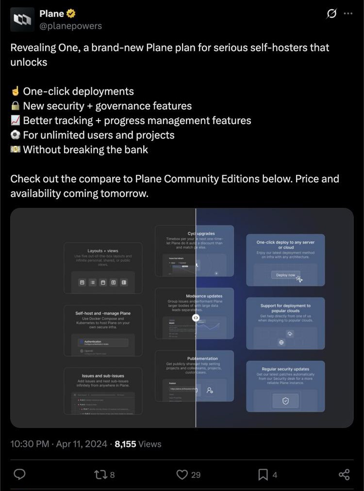

Start with what the user is trying to do.
I went to Product to understand what we'd built and why. Then I broke the setup into steps: what does someone trying to run Plane on their own server actually have to do? Where does it get easier?
That's usually where I start hearing the posts I want to write. A command-line tool is a feature. Getting Plane running in under three minutes is something you can show. And all the things we got wrong on the way to making self-hosting easier? That's a developer blog I'd actually want to read.
I chose the CLI demo, the engineering blog, and the founders' letter as pieces of the campaign, then repurposed them for Twitter. The demo showed what changed. The blog explained how we got there. The letter answered why we'd chosen a one-time license in the first place.



The posts were getting views. Discord was quiet.
People were seeing the posts, but I wasn't seeing the conversation I'd expected. I went back to my content plan. The reveal spoke to "serious self-hosters," and I'd given them plenty to look at: faster setup, more control over their servers, and better security. I'd spent less time connecting those features to the work that made people like Plane in the first place.
The May 15 thread was where I brought those stories together. I opened with what One meant for growing businesses and reused the demo to show how quickly they could get started. Then I pulled in posts about seeing all your active sprints in one place and sharing project views with clients. The thread gave admins a reason to care about the setup and gave the rest of the team a reason to care about the plan. It ended with the price and a deadline to preorder.
What happened.
The April 11 reveal drew 8.1K views. The May 15 thread drew 2.9K views. The reveal got more reach; I'd feature the thread because it best shows what I did with the content over the course of the campaign.
What I'd do differently.
- 1
I'd add a "What does this post answer?" column to my content calendar. How long does setup take? What changes for my team? Why is this a one-time payment? That gives every post a job and makes it easier to see which questions I'm repeating and which ones I've left unanswered.
- 2
I'd decide what success looks like before the reveal. I'd track views, pricing-page visits, and license purchases separately, with tagged links for each post. A quiet Discord tells me something about the conversation. It doesn't tell me whether people are considering or buying the plan.